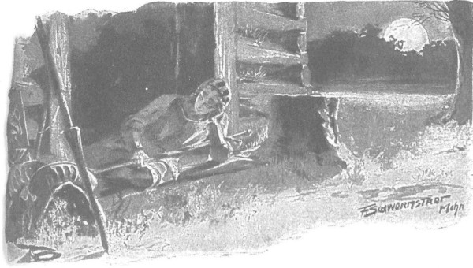

Những lời nói dịu dàng, những vuốt ve âu yếm và những lời cầu nguyện đều không giúp được gì - Danusia không nhận ra ai và không tỉnh lại. Cảm xúc duy nhất chế ngự toàn bộ con người nàng là nỗi sợ hãi kinh hoàng, giống như nỗi sợ hãi bùng ra khi một con chim bị bắt. Khi thức ăn được mang đến, nàng không muôn ăn khi có mặt người khác, dù qua ánh mắt thèm khát liếc nhìn thức ăn thì người ta biết là nàng đang rất đói, thậm chí kiệt quệ vì đói. Khi còn lại một mình, nàng lao tới thức ăn với sự khát thèm của một con thú hoang, nhưng khi Zbyszko bước vào phòng, nàng lại lẩn ngay vào xó nhà, nấp sau những chùm hoa bia khô. Zbyszko hoài công đang rộng vòng tay, hoài công chìa tay, hoài công năn nỉ, trong khi cố nuốt nước mắt nghẹn ngào. Nàng không muốn rời khỏi chỗ ẩn nấp ngay cả khi người ta đốt lửa trong phòng và ánh lửa sáng soi rõ nét mặt Zbyszko. Dường như trí nhớ đã rời xa nàng cùng với các giác quan. Chàng nhìn nàng, nhìn vẻ mặt hốc hác với nỗi kinh hoảng đông cứng lại, nhìn đôi mắt trũng sâu, nhìn những mảnh vải rách te tua mà nàng đang khoác trên người, lòng chàng chợt trào lên nỗi đau và cơn thịnh nộ khi nghĩ nàng đã rơi vào tay lũ người ấy, đã bị đối xử tàn tệ ra sao. Cơn tức giận điên cuồng bùng lên khủng khiếp đến nỗi chàng vồ lấy thanh gươm, nhảy tới chỗ Zygfryd và hẳn chàng đã giết tươi lão ta, nếu ông Maćko không kịp ghì chặt tay chàng.
Rồi họ giằng co nhau như hai kẻ thù, nhưng chàng trai trẻ đã quá yếu do cuộc đấu trước đó với gã khổng lồ Arnold, nên lão hiệp sĩ đã thắng; ông khóa tay chàng, rồi quát lên:
- Mày điên à?
- Chú bỏ tôi ra! - Zbyszko run cả người, đáp. - Tôi điên cả người đây này.
- Cứ điên đi! Tao không buông! Thà mày đập đầu vào thân cây, còn hơn mày làm nhục bản thân và cả gia tộc.
Và ghì chặt tay Zbyszko như những gọng kìm sắt, ông giận dữ quát lên:
- Thử nhìn xem mày đã làm gì! Thù hận không mất đi, mày là một hiệp sĩ đeo đai cơ mà! Sao lại thế, hả? Mày dám đâm chết một tù binh bị trói á? Mày sẽ chẳng giúp được gì cho Danusia, mà thân mày còn ra thể thống gì nữa? Không ra cái thá gì hết, chỉ còn nỗi nhục nhã. Mày nói là ngay cả đức vua và các quận công cũng có khi giết chết tù binh chứ gì? Thôi đi! Chúng ta thì không! Và họ thì thoát tội, mày thì không. Họ có cả những vương quốc, những thành đô, những lâu đài, còn mày có gì? Chỉ có danh dự hiệp sĩ mà thôi. Ai không lên án họ, mày cứ việc nhổ vào mặt. Tỉnh lại đi, cầu Chúa!
Một khoảnh khắc im lặng bao trùm.
- Chú buông cháu ra, - Zbyszko buồn bã nói, - cháu sẽ không đâm lão ta.
- Hãy lại chỗ đống lửa, ta sẽ bàn.
Ông cầm tay dắt chàng đến bên đống lửa mà gia nhân đã đốt lên bằng nhựa thông. Ngồi xuống đấy, ông Maćko ngẫm nghĩ hồi lâu, rồi nói:
- Anh hãy nhớ đã hứa sao với ông Jurand về số phận cái con chó già này. Chính ông ấy mới là người báo thù cả cho bản thân lẫn cho những đau khổ của Danusia! Ông ấy sẽ trả thù, đừng lo! Anh phải thực hiện ước nguyện của ông Jurand. Ông ấy xứng đáng được thế. Những gì anh không được phép làm, ông Jurand lại được phép, bởi vì ông ấy không phải là người bắt tù binh, mà có được tù binh như một món quà do anh tặng. Dù có lột da lão thì ông ấy cũng không phải xấu hổ và không bị người đời trách móc - anh có hiểu không?
- Cháu hiểu. - Zbyszko đáp. - Chú nói phải lắm.
- Rõ là anh đã tỉnh trí lại rồi. Nhỡ anh có bị ma quỷ cám dỗ lần nữa, thì hãy nhớ rằng chính anh đã thề với Lichtenstein và những hiệp sĩ Thánh chiến khác; nếu anh giết tù binh không có vũ khí tự vệ, và nếu tin tức được bọn gia nhân lan truyền ra, thì sẽ không có hiệp sĩ nào thèm tỷ thí với anh, và họ có quyền làm như thế. Lạy Chúa che chở! Bất hạnh không thiếu, nhưng đừng chịu nhục. Tốt nhất ta hãy bàn xem phải làm gì bây giờ, và làm sao trở về.
- Xin chú cứ dạy ạ! - Chàng trai thốt lên.
- Ta bàn thế này nhé: ta có thể trừ khử con rắn cái đã từng canh giữ Danusia, nhưng hiệp sĩ không thể lấy máu của nữ nhân, nên ta sẽ giao nộp nó cho quận công Janusz. Nó đã mưu mô phản nghịch ngay từ hồi ở lâm cung, bên cạnh quận công và quận chúa, vậy hãy để cho tòa án Mazowsze xử tội, và nếu con mụ ấy không bị phanh thây trên bánh xe, thì ta e rằng họ sẽ xúc phạm công lý của Chúa. Khi chưa có được người nữ nào khác chăm sóc cho Danusia thì vẫn cần mụ ta, nhưng sẽ phải trói mụ vào sau ngựa. Giờ thì phải về rừng Mazowsze càng sớm càng tốt.
- Bây giờ thì không, bởi đang đêm. Biết đâu ngày mai, Chúa sẽ giúp Danusia tỉnh lại.
- Hãy để cho cả lũ ngựa cũng được nghỉ. Sáng sớm ta lên đường.
Cuộc trò chuyện bị gián đoạn bởi tiếng nói của Arnold von Baden, bắt đầu kêu la gì đó bằng tiếng Đức, trong khi đang nằm ngửa không xa đấy, bị trói liền với thanh kiếm của hắn. Ông Maćko đứng dậy đi về phía hắn, nhưng không thể hiểu thật rõ những gì hắn nói, nên bắt đầu nhìn quanh tìm chàng trai Séc.
Nhưng Hlava không thể đến ngay, vì còn đang bận việc khác. Trong lúc họ đang trò chuyện cạnh đống lửa, chàng đến chỗ mụ đầy tớ của Giáo đoàn, nắm gáy mụ và lắc như một quả lê, rồi bảo:
- Nghe này, đồ chó cái! Mày hãy vào lều, trải tấm da dọn chỗ nằm cho tiểu thư, nhưng trước đó hãy ăn mặc đàng hoàng cho tiểu thư bằng quần áo của mày, còn mày phải khoác bộ đồ rách nát mà bọn chó đã bắt tiểu thư phải khoác lên người khi đi đường… Mả mẹ chúng nó!
Và không thể kiềm chế cơn giận đột ngột, chàng lắc mụ ta dữ dội đến nỗi mắt mụ trợn ngược. Có lẽ chàng đã bẻ gãy cổ mụ ta, nhưng nghĩ mụ ta vẫn cần thiết, nên rốt cuộc chàng buông cổ mụ ra và bảo:
- Rồi đi tìm cành lá mà trải chỗ cho mày.
Mụ hoảng hồn ôm chặt đầu gối chàng, bị chàng đạp cho một cái, mụ liền chạy vào túp lều và cúi gập mình xuống chân Danusia, bắt đầu kêu van:
- Cứu con với! Đừng buông con!
Nhưng Danusia chỉ nhắm nghiền mắt, miệng nàng thốt ra những tiếng thì thầm hổn hển:
- Tôi sợ lắm, tôi sợ, tôi sợ lắm!
Rồi sau đó nàng đờ đẫn hẳn, mỗi lần mụ đầy tớ của Giáo đoàn lại gần, nàng luôn bị tác động như thế. Nàng để cho mụ cởi quần áo và thay bộ trang phục mới. Mụ trải xong chỗ nằm, đặt nàng lên tấm da như một hình nhân bằng gỗ hoặc nặn bằng sáp, còn mụ thì ngồi bên đống lửa sưởi, sợ đi ra khỏi lều.
Lát sau, chàng trai Séc bước vào, trước tiên tới chỗ Danusia và nói:
- Tiểu thư đang ở giữa những người bạn, vì vậy nhân danh Cha, Con và Thánh Thần, xin hãy ngủ yên!
Chàng làm dấu thánh cho nàng, rồi nói với mụ đầy tớ mà không lên giọng, để tránh cho Danusia khỏi phải sợ:
- Mụ phải bị trói nằm ngoài cửa, nhưng nếu mụ la hét hay làm cho tiểu thư sợ, tao sẽ cắt cổ đấy. Đứng dậy, đi đi.
Chàng đưa mụ ra khỏi lều, trói lại như đã nói, thật chắc chắn, sau đó đi đến chỗ Zbyszko.
- Tôi đã ra lệnh con kỳ nhông cái đó thay cho cô chủ các thứ quần áo mà nó mặc trên người. - Chàng nói. - Đệm nằm đã được trải cẩn thận và cô chủ đang ngủ. Lúc này tốt nhất là không nên đến đó, thưa cậu chủ, để khỏi làm cô chủ sợ. Cầu Chúa để sau khi được nghỉ ngơi, ngày mai cô chủ sẽ tỉnh táo, còn bây giờ cậu chủ phải ăn uống và nghỉ ngơi đi.
- Ta sẽ nằm ngay ngoài cửa lều. - Zbyszko nói.
- Để tôi kéo con chó cái kia về phía cái xác râu tóc đỏ tua tủa đã, nhưng bây giờ cậu chủ phải ăn, bởi vì ta còn trước mặt cả một quãng đường dài đầy gian khó đấy.
Nói xong, chàng bước đi để lấy mấy miếng thịt hun khói và củ cải khô ra từ cái túi da mà họ đã mang theo để ăn đường từ hồi còn ở trại của người Żmudź, nhưng chàng chỉ vừa đặt thức ăn trước mặt Zbyszko thì đã bị ông Maćko gọi lại phía hiệp sĩ Arnold.
- Nào, ngươi hãy nói xem, - ông nói, - gã hiệp sĩ to xác này định nói gì, bởi vì mặc dù ta cũng biết vài từ, nhưng ta chẳng hiểu nó muốn nói gì.
- Con sẽ kéo y lại bên đống lửa, thưa ông chủ, để ngài hỏi. - Chàng Séc nói.
Nói đoạn, chàng tháo đây đeo, kéo đai vai của Amold, đặt hắn trên lưng mình. Phải còng người dưới sức nặng của gã khổng lồ, nhưng vốn là một tráng niên, chàng vẫn mang được hắn đến bên đống lửa và ném hắn như một bao tải đậu bên cạnh Zbyszko.
- Cởi trói cho ta. - Gã hiệp sĩ Thánh chiến thốt lên.
- Thế cũng được, - ông Maćko nói, - nếu ngươi thề trên danh dự hiệp sĩ rằng ngươi thừa nhận mình là tù binh. Dẫu sao thì ta cũng bảo rút thanh kiếm khỏi hai đầu gối và cởi trói tay cho ngươi, để ngươi có thể ngồi với bọn ta, nhưng ta không thể cởi trói chân ngươi được, cho đến khi nói chuyện xong.
Ông gật đầu cho chàng Séc cắt dây trói tay tên Đức, rồi giúp hắn ngồi lên. Arnold hằn học nhìn ông Maćko và Zbyszko rồi hỏi:
- Các ngươi là ai?
- Ngươi dám hỏi thế à? Là ai thì quan trọng gì! Thề đi.
- Ta chỉ có thể thề danh dự hiệp sĩ với các hiệp sĩ mà thôi.
- Thế thì trông đây!
Ông Maćko hé tấm áo choàng, cho hắn thấy đai hiệp sĩ trên hông.
Trông thấy thế, gã Thánh chiến vô cùng ngạc nhiên, mãi lúc lâu sau mới thốt được ra:
- Sao lại thế? Vậy mà các ngươi lại lẩn quất trong rừng? Các ngươi giúp bọn ngoại đạo chống lại các tín đồ Ki-tô giáo?
- Mày nói láo! - Ông Maćko quát lớn.
Và thế là bắt đầu một cuộc đối thoại không thân thiện, gay cấn, giống như cãi cọ. Nhưng khi ông Maćko tức giận quát lên rằng chính Giáo đoàn đã không cho phép Litva chịu lễ rửa tội, và ông nêu ra tất thảy các bằng chứng, thì hiệp sĩ Arnold lại một lần nữa ngạc nhiên và dừng lời, bởi cái sự thật đó hiển nhiên đến mức rõ ràng không thể không nhìn thấy hoặc bác bỏ. Đặc biệt, gã hiệp sĩ Đức bị tác động mạnh nhất bởi những lời ông Maćko vừa nói, vừa làm dấu thánh giá: “Ai mà biết, thực ra các ngươi - nếu không phải tất cả các ngươi thì chí ít cũng là một số - phục vụ cho ai?”, và hắn bị tác động bởi vì ngay trong chính Giáo đoàn cũng có dư luận cho rằng một số vị lãnh binh đã phục vụ cho quỷ Sa-tăng. Họ không tổ chức một phiên xét xử nào cả để khỏi phải mang ô nhục cho Giáo đoàn, nhưng Arnold biết rõ rằng họ đã thầm thì về chuyện đó giữa các anh em đồng đạo và rằng những tin đồn tương tự vẫn cứ lan truyền. Thêm nữa, biết những câu chuyện mà Sanderus kể về các hành vi khó hiểu của lão Zygfryd, ông Maćko đã gây lo lắng cùng cực cho kẻ to xác trung thực.
- Thế lão Zygfryd, kẻ mà ngươi đã theo để tham gia cuộc chiến này, - ông nói, - có phục vụ Chúa Ki-tô hoặc Đức Chúa Trời hay không? Ngươi chưa từng nghe lão trò chuyện với hồn ma bóng quế, thì thầm với bọn chúng và cười sằng sặc giữa đêm sao?
- Quả có thế! - Arnold lầm bầm.
Nhưng Zbyszko, bị một làn sóng buồn giận mới trào dâng trong tim, đột nhiên kêu lên:
- Ngươi còn dám nói đến danh dự hiệp sĩ? Nhục nhã cho ngươi, vì đã giúp lũ đao phủ và hỏa ngục! Nhục nhã cho ngươi có thể thản nhiên nhìn nỗi khổ hình của một cô gái không chút khả năng tự vệ, lại là con gái một hiệp sĩ; mà có thể chính ngươi cũng đã giày vò cô ấy. Nhục nhã cho ngươi!
Arnold tròn mắt kinh ngạc và làm dấu thánh giá, thốt lên:
- Nhân danh Cha, Con và Thánh Thần!… Sao lại thế?… Cô gái điên trong đầu có hai mươi bảy con quỷ dữ trú ngụ ấy á?… Tôi?…
- Khốn nạn! Khốn nạn! - Giọng Zbyszko đứt đoạn, khản đặc.
Và nắm chặt lấy chuôi thanh đoản kiếm, chàng lại quắc ánh mắt hoang dại nhìn về phía lão Zygfryd đang nằm trong bóng tối phía xa.
Ông Maćko lặng lẽ đặt tay lên vai chàng, bóp chặt với tất cả sức mạnh để giúp chàng bình tĩnh trở lại, rồi quay sang Arnold, ông bảo:
- Cô gái ấy là con gái của hiệp sĩ Jurand trang Spychow, và là vợ của hiệp sĩ trẻ đây. Bây giờ ngươi đã hiểu tại sao chúng ta phải đuổi theo các ngươi và tại sao ngươi lại thành tù binh của chúng ta!
- Lạy Chúa! - Arnold than. - Sao thế? Từ đâu? Cô ấy bị tâm trí lẫn lộn…
- Bởi vì lũ Thánh chiến các ngươi đã bắt cóc con chiên ngây thơ như cô ấy và đã hành hạ cô ấy đến mức đó.
Khi nói đến “con chiên ngây thơ”, Zbyszko đã đưa nắm tay lên miệng và hàm răng chàng cắn chặt mu bàn tay, đôi mắt chàng tuôn ra những giọt lệ lớn của nỗi đau không thể kiểm soát. Arnold ngồi lặng. Chàng trai Séc vắn tắt thuật lại chuyện gã Danveld phản bội, bắt cóc Danusia, hành hạ ông Jurand và trận đấu tay đôi với Rotgier. Khi chàng nói xong, một bầu im lặng bao trùm, chỉ nghe có những âm thanh xào xạc của rừng và tiếng lách tách của đống lửa.
Họ ngồi lặng hồi lâu, rốt cuộc Arnold ngẩng đầu lên và nói:
- Không chỉ trên danh dự hiệp sĩ, mà trên cả thập giá của Chúa Ki-tô, tôi thề với các người là tôi gần như chưa thấy mặt cô gái này, tôi không hề biết cô gái này là ai, tôi không bao giờ để mình can dự vào bất cứ việc gì có thể hành hạ cô ấy.
- Thế thì ngươi hãy thề thêm là ngươi tự nguyện đi cùng chúng ta mà không tìm cách bỏ trốn, và ta sẽ ra lệnh cởi trói hoàn toàn cho ngươi. - Ông Maćko bảo.
- Cứ như ông nói - tôi thề! Các người định đưa tôi đi đâu?
- Về Mazowsze, đến gặp ông Jurand trang Spychow.
Nói đoạn, chính tự tay ông Maćko cắt dây trói chân Arnold, rồi chỉ cho hắn món thịt và củ cải. Lát sau, Zbyszko cũng nhỏm dậy và đi nghỉ ở ngoài cửa lều, nơi chàng không thấy mụ hầu của Giáo đoàn, vì trước đấy các tay nô bộc đã dẫn mụ đi đến chỗ đàn ngựa. Ở đó chàng ngả mình lên tấm da mà Hlava mang tới, quyết định không ngủ, chờ xem buổi bình minh có mang đến sự thay đổi may mắn nào cho tình trạng của Danusia.
Chàng trai Séc trở về bên đống lửa, bởi vì có gì đó dè nặng lên tâm hồn chàng, khiến chàng muốn chuyện trò với vị hiệp sĩ lớn tuổi của trang Bogdaniec. Chàng gặp ông cũng đang trầm lặng nghĩ suy, không mảy may để ý đến tiếng ngáy của gã Arnold, người sau khi tiêu thụ một lượng đáng kể củ cải và thịt xông khói, đã ngủ say sưa vì mệt mỏi.

Zbyszko nằm ngay ngoài cửa lều của Danusia
- Ông chủ không nghỉ à, thưa ông? - Chàng hộ vệ hỏi.
- Giấc ngủ không đến. - Ông Maćko đáp. - Cầu Chúa một ngày mai tốt lành…
Và nói thế, ông ngước nhìn lên phía các vì sao.
- Sao sớm đã hiện trên bầu trời, mà ta vẫn nghĩ mãi, không rõ mọi chuyện sẽ ra sao.
- Con thì không ngủ được, vì trong đầu cứ nghĩ mãi về tiểu thư Zgorzelice.
- Hey, phải rồi, lại một đứa nữa bị khổ! Mà giờ nó đang ở Spychow.
- Ở trang Spychow. Không biết tại sao lại đưa cô ấy từ Zgorzelice tới đó.
- Nó muốn đi gặp cha tu viện trưởng, mà khi cha đột ngột qua đời, thì ta còn biết làm sao. - Ông Maćko cáu kỉnh bảo; ông không hề muốn nói về chuyện đó, bởi tận sâu trong tâm hồn ông cảm thấy mình có lỗi.
- Vâng, nhưng làm gì bây giờ?
- Ha! Biết sao? Ta sẽ mang nó quay về nhà và để tùy ý Chúa!…
Nhưng sau đó ông lại nói thêm:
- Đành là thuận theo ý Chúa, nhưng giá như Danusia khỏe mạnh và bình thường như những người khác, thì chí ít người ta còn biết đường phải làm gì. Chứ như thế này thì có quỷ mới biết! Nếu một mai nó không khỏe lại… mà cũng không chết đi. Cầu Đức Chúa Giêsu phán xử.
Nhưng chàng Séc lúc này lại chỉ nghĩ đến Jagienka.
- Ngài thấy đấy, thưa ông chủ nhân từ. - Chàng nói. - Khi con rời khỏi Spychow và nói lời tạm biệt, cô ấy đã nói với con thế này: “Nếu có chuyện gì xảy ra, ngươi hãy về đây trước anh Zbyszko và cụ Maćko, bởi vì nếu họ phải nhờ người nào khác, thì tốt hơn là phái ngươi về đây và ngươi sẽ đưa ta trở về Zgorzelice.”
- Hey! - Ông Maćko nói. - Sẽ bất tiện cho nó nếu phải ở lại Spychow khi Danusia về đấy. Chắc phải đưa nó về Zgorzelice. Sao ta thương cho con bé côi cút ấy thế, thương nó quá, nhưng nếu đó không phải là ý Chúa thì khó lắm! Biết tính sao bây giờ? A, mà khoan đã… Ngươi nói rằng nó dặn ngươi phải mang tin cho nó trước chúng ta, và sau đó đưa nó về Zgorzelice?
- Cô ấy đã nói thế, đúng như con đã nhắc lại với ngài.
- Hà! Thế thì ngươi sẽ lên đường trước chúng ta. Cũng phải báo trước cho ông Jurand là đã tìm được con gái, để niềm vui bất ngờ không giết mất ông ta. Lạy Chúa lòng lành, chẳng có gì tốt hơn để làm. Quay về ngay đi! Nói rằng chúng ta đã giải thoát được Danusia và sẽ mau đưa cô ấy trở về, còn ngươi hãy đưa cô gái tội nghiệp kia về nhà.
Nói tới đây, vị hiệp sĩ lớn tuổi thở dài, bởi vì ông thực sự lấy làm tiếc cho Jagienka và cho những ý định mà ông hằng nhen nhúm trong tim.
Lát sau, ông lại hỏi:
- Ta biết ngươi là kẻ khôn ngoan và mạnh mẽ, nhưng liệu ngươi có thể bảo vệ nó tránh khỏi nguy hiểm và không bị làm hại? Bởi vì trên đường cũng dễ dàng xảy ra điều nọ chuyện kia.
- Dạ con làm được, dù có phải bị mất đầu! Con sẽ chọn vài người gia nhân tốt mà ông chủ của điền trang Spychow đã giao cho con, và con sẽ đưa cô ấy đến nơi an toàn, dẫu đó là tận cùng thế giới.
- Nào! Đừng có quá tự tin. Hãy nhớ rằng ngay khi đến nơi, ở tại điền trang Zgorzelice, ngươi cần phải để mắt đến bọn thằng Wilk trang Brzozowa và Cztan trang Rogowo… Mà thôi! Ta nói không vào việc chính rồi, vì chỉ phải đề phòng chúng để nhỡ có đứa xen vào chuyện tốt. Chứ bây giờ thì chẳng có hy vọng gì, cứ để chuyện gì phải đến thì đến.
- Dẫu sao con cũng sẽ bảo vệ cô ấy chống lại những gã kia, bởi vì cô hôn thê tội nghiệp này của cậu Zbyszko hầu như chỉ còn thoi thóp… gần như đã chết rồi!
- Ngươi nói đúng quá, lạy Chúa lòng lành: hầu như chỉ còn thoi thóp - gần như đã chết..
- Việc đó chỉ nhờ vào lượng Chúa thôi, còn bây giờ chúng ta hãy nghĩ đến cô thanh nữ trang Zgorzelice.
- Đáng lý ra, - ông Maćko nói, - đích thân ta phải đưa con bé về nơi quê cha đất tổ. Nhưng biết làm sao. Ta bây giờ đâu thể rời Zbyszko, mà đấy là vì nhiều nguyên do. Chính ngươi cũng thấy nó cứ nghiến răng, chỉ chực nhảy xổ đến lão lãnh binh già kia mà xé xác như một con lợn lòi. Nếu chẳng may như ngươi nói, cô gái này tắt nghỉ dọc đường, thì ta chẳng biết có ngăn nổi nó không nữa kia. Nếu không có ta, sẽ chẳng ai kiềm giữ được nó và nỗi ô nhục muôn đời sẽ giáng xuống đầu nó cùng cả dòng tộc, cầu Chúa ngăn cản, amen!
Nghe thấy thế, chàng trai Séc bảo:
- Ha! Còn một cách nữa. Hãy giao cho con thằng giặc kia đã bị bịt đầu bằng bao đao phủ, con sẽ không đánh rơi lão dọc đường, và khi về tới trang Spychow con sẽ trút lão ra khỏi bao trước mặt ngài Jurand.
- A, cầu Chúa ban cho ngươi sức khỏe! Ô, ngươi thật sáng ý! - Ông Maćko vui vẻ thốt lên. - Một cách thật đơn giản! Thật đơn giản! Hãy mang lão theo, cốt đưa lão về đến trang Spychow còn sống, ngươi muốn làm gì với lão thì làm.
- Thế thì cứ giao cả con chó cái thành Szczytno kia nữa cho con! Nếu dọc đường nó không gây sự thì con sẽ mang nó về Spychow, còn nếu sinh sự thì cho nó được treo lên cây.
- Danusia cũng có thể sẽ mau bớt sợ và tỉnh trí nhanh hơn, nếu không thấy mặt hai kẻ kia. Nhưng nếu ngươi mang con tỳ nữ đi, không có ai là nữ thì biết làm thế nào chăm sóc con bé?
- Chúng ta đang ở giữa rừng, ngài có thể gặp những nông dân địa phương hoặc các cư dân mang theo cả gia đình đi tản cư. Ngài cứ chọn lấy một người đàn bà nào đó mà ngài gặp đầu tiên, vẫn còn tốt hơn con mụ ấy. Trước đó, chỉ cần cậu chủ Zbyszko chăm sóc là đủ.
- Hôm nay sao ngươi nói năng thông minh hơn ngày thường thế. Đúng đấy. Có lẽ được nhìn thấy Zbyszko suốt ngày ở bên, con bé sẽ mau tỉnh hơn cũng nên. Zbyszko có thể chăm con bé thay cả cha lẫn mẹ. Tốt lắm. Thế khi nào ngươi lên đường?
- Con sẽ không đợi đến bình minh, nhưng bây giờ con ngả lưng một chút. Có lẽ giờ chưa tới nửa đêm.
- Sao bắc đẩu đã lên rồi, nhưng sao mai vẫn chưa xuất hiện.
- Cảm ơn Chúa đã cho chúng ta bàn bạc được đôi điều, vì con đang buồn nẫu gan nẫu ruột.
Nói đoạn, chàng trai Séc duỗi người bên đống lửa đang lụi dần, phủ lên người một tấm da xù xì và trong chớp mắt ngủ thiếp đi. Nhưng bầu trời chưa rạng, đêm vẫn đang sâu, thì chàng đã tỉnh thức, thò người ra từ dưới tấm da, nhìn lên các vì sao và co duỗi chân tay đã hơi tê cứng, đánh thức ông Maćko.
- Đến giờ con phải sửa soạn rồi! - Chàng nói.
- Đi đâu? - Ông Maćko nửa tỉnh nửa mê hỏi, dụi mắt bằng nắm tay.
- Về Spychow.
- A phải! Thế ai đang ngáy bên cạnh ta thế? Đến người chết cũng phải tỉnh dậy.
- Hiệp sĩ Arnold. Để con tiếp thêm ít cành cây cho đống lửa rồi đến chỗ toán gia nhân.
Chàng bước đi, nhưng một lúc sau quay lại với những bước chân vội vã, và ngay từ xa đã kêu lên bằng giọng cố hạ thấp:
- Thưa ngài, có tin mới - mà là tin xấu!
- Xảy ra chuyện gì thế? - Ông Maćko bật dậy, kêu lên.
- Mụ đầy tớ trốn rồi. Bọn gia nhân đã nhốt mụ vào giữa đàn ngựa và cởi trói cả hai chân mụ, cầu sét đánh chết chúng đi! Khi chúng ngủ say, mụ đã trườn như một con rắn giữa chúng và chạy trốn. Hãy đến xem, thưa ngài.
Lo lắng, ông Maćko vội vã đi cùng Hlava đến chỗ đàn ngựa, nhưng ở đấy họ chỉ gặp mỗi một gia nhân. Những người khác đang chạy đi tìm kẻ bỏ trốn. Song tìm kiếm trong đêm giữa những lùm cây rậm rạp là chuyện ngu ngốc; cho nên chẳng bao lâu sau họ đều trở về, đầu cúi gằm. Ông Maćko lặng lẽ cho họ mấy nắm đấm, sau đó quay trở lại chỗ đống lửa, bởi vì chắng có gì khác để làm.
Lát sau, Zbyszko cũng đến; chàng đang canh trước cửa lều và không thể ngủ, nên khi nghe thấy tiếng bước chân, chàng muốn biết đã xảy ra chuyện gì. Ông Maćko kể cho chàng nghe những gì đã bàn với chàng trai Séc, và sau đó mới báo tin mụ đầy tớ của Giáo đoàn đã đi trốn.
- Cũng chẳng phải chuyện gì lớn, - ông nói, - bởi vì nếu mụ ta không chết đói trong rừng, thì đám nông phu cũng sẽ tóm được mụ ta, họ sẽ đập mụ chết nếu trước đó lũ sói không xơi tái mụ. Chỉ tiếc rằng mụ tránh được sự trừng phạt mà lẽ ra mụ phải nhận ở Spychow.
Zbyszko cũng lấy làm tiếc là mụ thoát khỏi hình phạt, nhưng chàng nhận tin ấy với vẻ thản nhiên. Chàng cũng không phản đối việc chàng trai Séc sẽ đem lão Zygfryd đi trước, vì chàng thờ ơ với tất cả những thứ gì không trực tiếp liên quan tới Danusia. Ngay lập tức, chàng nói về cô gái:
- Sáng sớm mai, cháu sẽ đặt nàng ngồi phía trước trên lưng ngựa, và cũng sẽ đi. - Chàng nói.
- Thế nó ra sao rồi? Ngủ à? - Ông Maćko hỏi.
- Thỉnh thoảng lại rên rỉ một chút, nhưng cháu không rõ liệu nàng ngủ hay thức, cháu không muốn vào lều, để khỏi làm nàng sợ hãi.
Cuộc nói chuyện bị gián đoạn bởi khi thấy Zbyszko, chàng Séc liền kêu lên:
- Ô, cậu chủ đã dậy rồi sao? Vâng, đến giờ rồi! Ngựa đã sẵn sàng và lão quỷ già đã được trói chặt vào yên. Sắp sáng rồi, bây giờ đêm ngắn lắm. Các ngài ở lại, cầu Chúa che chở, thưa các ngài!
- Hãy đi với Chúa, và mạnh khỏe nhé!
Nhưng Hlava kéo ông Maćko sang một bên và nói:
- Con cũng muốn xin ông chủ, nếu như có chuyện… ngài biết rồi đấy… nếu có chuyện chẳng lành xảy ra hay gì đó… thì ngài hãy cử ngay một tên gia nhân chạy thẳng về Spychow. Nếu chúng con đã ra đi, thì hãy bảo nó đuổi theo!
- Được rồi. - Ông Maćko nói. - Ngươi đưa Jagienka đến thành Plock, hiểu chưa! Đến đấy với giám mục và nói với đức cha cô ấy là ai, chính là con gái đỡ đầu của cha tu viện trưởng, đã có di chúc ở chỗ giám mục rồi đấy, rồi xin giám mục tiếp tục chăm lo cho cô ấy, bởi điều đó cũng đã ghi trong di chúc.
- Thế nếu đức giám mục giữ chúng con ở lại thành Plock?
- Hãy vâng lời cha trong mọi việc và thực hiện những gì cha bảo.
- Vâng, sẽ làm đúng thế, thưa ngài. Nhờ lượng Chúa!
- Nhờ lượng Chúa.